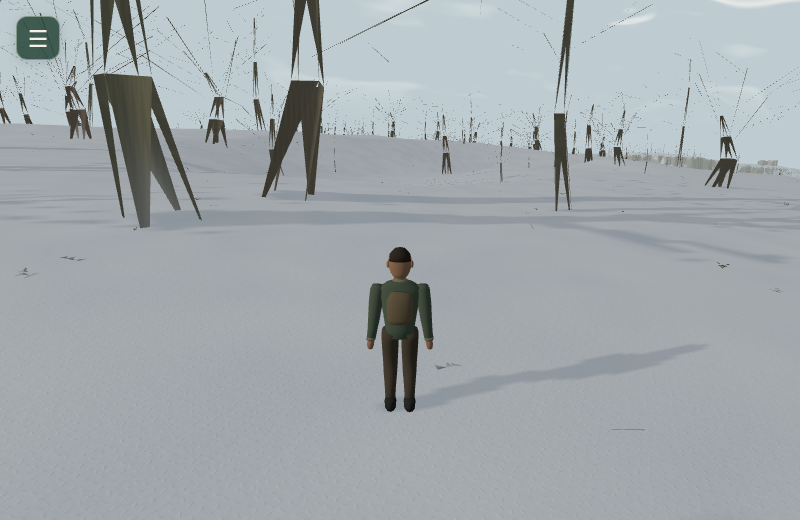
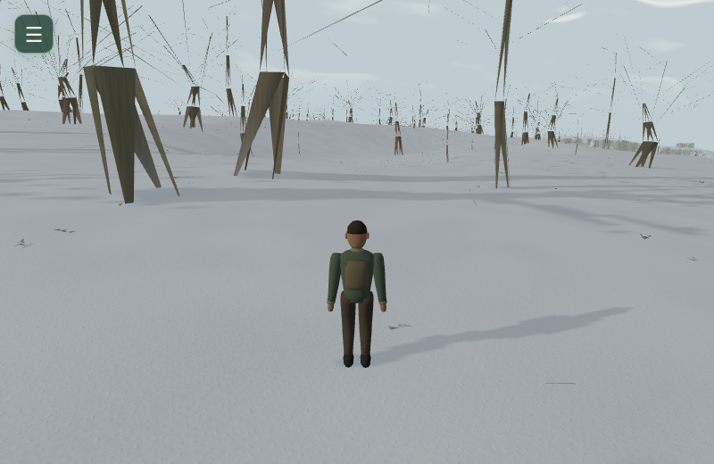
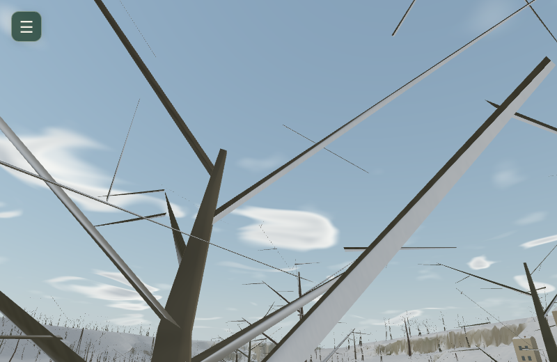
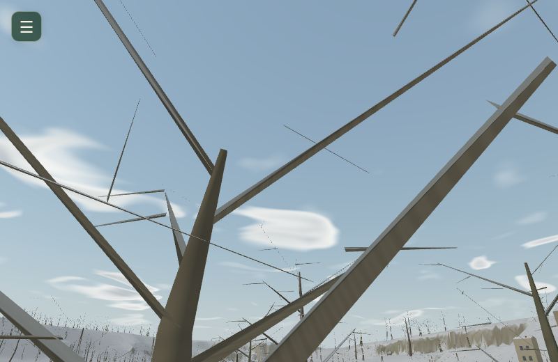
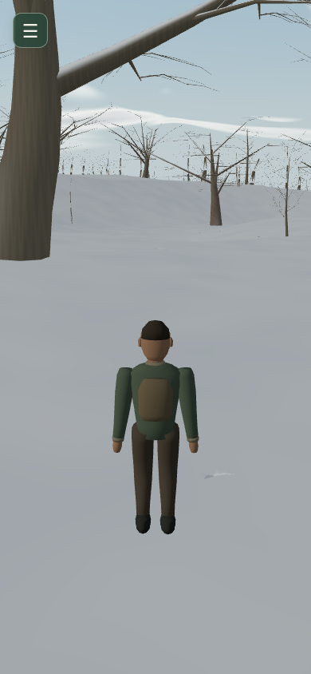
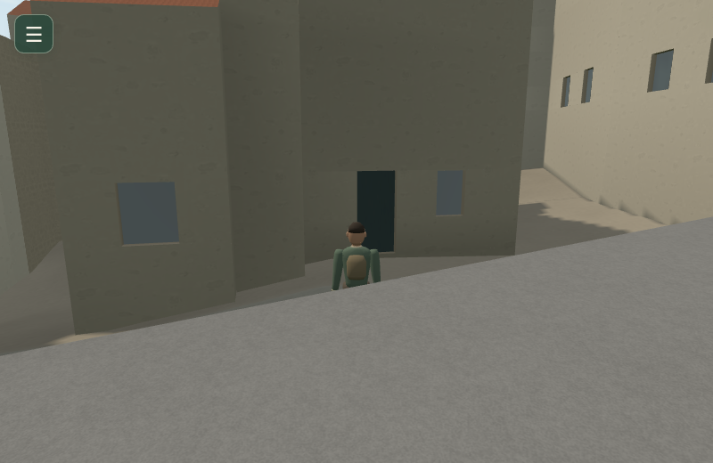
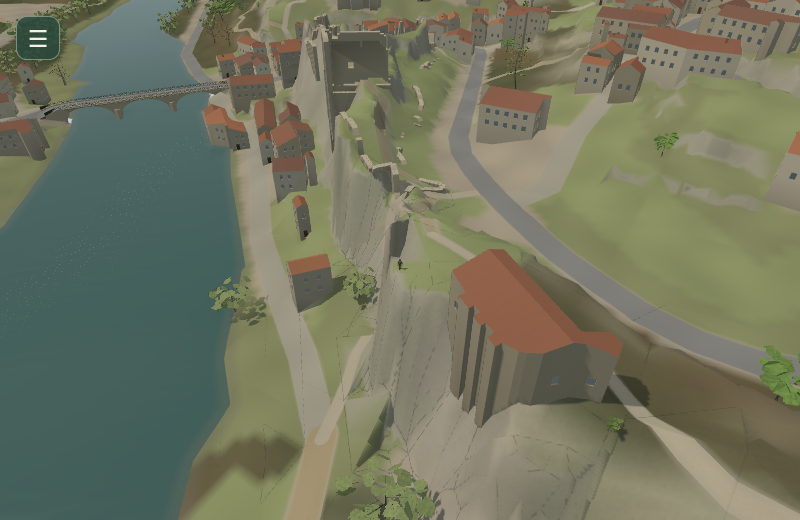
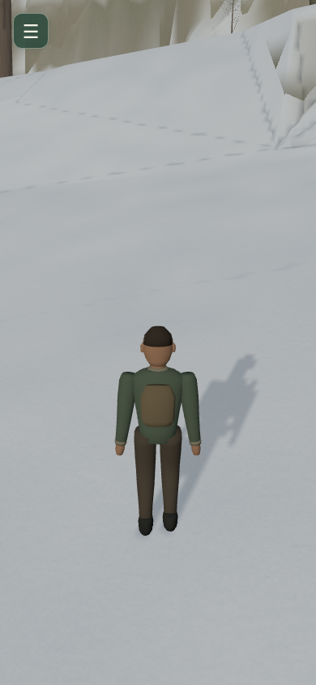
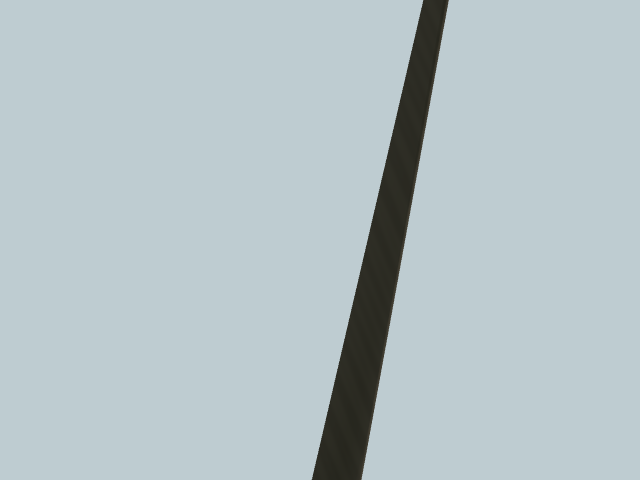
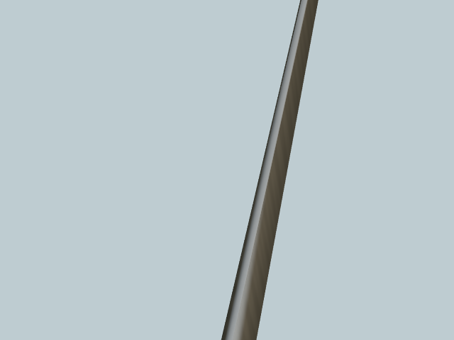

Endless Earth · M24 · Brouillon · 0 €
La neige retrouve le dessus des branches
Premier jalon uniquement. Mission 24 complète non livrée. Les empreintes, nombreuses fumées, vent enrichi, grand voyageur, nage et Camper restent inachevés. Aucun déploiement ni fusion. Les défauts de relief et performances M23 restent ouverts.
Base M23 fusionnée vérifiée : 9716fbb4. Le bois avait un winding opposé à ses normales extérieures ; le masque double face pouvait alors blanchir le dessous. Ce correctif change l’orientation des indices des tubes et conserve leurs normales extérieures dans le masque de neige. Toutes les positions et silhouettes restent identiques.
Rapport complet et limites · Préservation des sources · Caméras, profils et traces natives · Lecture des pixels · Benchmark complet
Atelier : cinq vraies géométries du moteur
Ces gros plans sont synthétiques : une branche réelle du générateur de production est isolée dans le renderer Three.js, avec son matériau, ses instances et son vent. L’exposition est volontairement uniforme pour isoler l’orientation. Ce ne sont pas des vues géographiques d’Angles et aucune image n’est substituée par une maquette.
 Avant · M23 inchangée
Avant · M23 inchangée Après · même caméra, date, vent et géométrie
Après · même caméra, date, vent et géométrie| Pixels de branche vus par-dessous | Blanchiment avant | Blanchiment après |
|---|
| Feuillu étalé | 47.964 % | 0.000 % |
| Cime haute | 24.297 % | 0.000 % |
| Ramure retombante | 10.596 % | 0.000 % |
| Jeune feuillu | 34.415 % | 0.000 % |
| Conifère | 79.761 % | 0.018 % |
Part des pixels de branche éclaircis de plus de 12 niveaux RGB moyens par l’activation du dépôt, à caméra et temps tenus. Le masque est un passage diagnostique séparé ; les captures ci-dessus sont le vrai matériau. Les silhouettes avant/après sont identiques dans ces sondes. Aucun résultat n’est extrapolé à chaque branche de France.
Dans le véritable pilote d’Angles
Exposition et géométrie réellement chargées, sans déplacer routes, terrain, bâtiments ou arbres. Le personnage garde ici son petit sac antérieur ; le nouveau voyageur n’est pas livré. Le dépôt reste une couche de couleur fine, sans épaisseur géométrique nouvelle.

Avant · forêt du pilote, janvier
Après · même position, même profil Équilibré
Avant · ramure retombante, caméra d’inspection
Après · dessous sombre, dépôt sur les surfaces supérieuresFilms natifs
Enregistrements MediaRecorder du vrai canevas ; vidéo réindexée par copie des codecs, sans images reconstruites ni accélération. Les paquets et timestamps sont vérifiés identiques aux bruts. Le mouvement reste celui du vent et du contrôleur existants ; ces films ne prouvent aucune autre nouveauté M24.
Atelier synthétique · ramure retombante · calmeAtelier synthétique · même famille · vent fort M11Vrai pilote · brève marche clavier hivernale · aucune empreinte nouvelle revendiquée
Viewport mobile 390 × 844, Éco · émulation Chromium, aucun appareil Android physique
Coût face à M23
SwiftShader logiciel, 480 × 320, DPR 1. Seize échantillons chauds alternés par version, scène et profil, synchronisés avec gl.finish et lecture des pixels. Caméra, date, temps du vent et dépôt appariés. Cette campagne est isolée des films ; aucun FPS de GPU physique n’est déduit de ces chiffres.
Cible +5 % non atteinte dans 2 scènes Équilibré sur huit : foret +5.16 % ; neige +14.01 %. Ces réserves M24 s’ajoutent aux dépassements M23, sans les effacer.
| Équilibré | Avant médiane ms | Après médiane ms | Après P95 ms | Écart |
|---|
| village | 320.7 | 333.1 | 408.0 | +3.87 % |
| pont | 289.0 | 300.7 | 357.9 | +4.05 % |
| foret | 230.6 | 242.5 | 297.2 | +5.16 % |
| rive | 429.3 | 421.6 | 476.8 | -1.79 % |
| terrain | 237.4 | 236.0 | 266.6 | -0.59 % |
| route | 303.5 | 294.8 | 352.0 | -2.87 % |
| nuit | 331.8 | 315.6 | 397.0 | -4.88 % |
| neige | 214.1 | 244.1 | 286.8 | +14.01 % |
Limites maintenues
Aucune phase A–F n’est déclarée achevée. Les autres chantiers restent à implémenter et à prouver.
Le MNT sous la rivière ne fournit pas une bathymétrie fiable : l’accès aquatique reste bloqué. Aucun bouton Camper inactif n’est ajouté. Les raccords Rue du Pont jusqu’à 0,996 m, talus bâtis, erreurs locales du relief et dépassements M23 ne sont pas corrigés ou cachés. Les arbres gardent leurs formes stylisées et les limites des rubans lointains.
Les défauts de terrain restent visibles
Stations M23 sans neige, même géographie et mêmes caméras. Aucun raccord ou talus n’est déclaré réparé par M24.
 M23 · raccord sans neige
M23 · raccord sans neige
M24 · défaut conservé
M23 · talus bâtiM24 · approximation conservéeTactile sur le build compilé
Déplacement et regard par événements tactiles natifs Chromium · émulation 390 × 844
Build TypeScript/Vite réel, sans interception du source Mesures tactiles et états du joueur · Régression des collisions
LOD lointains : essais non concluants et fichiers complets
Les gros plans LOD 2/3 de branche isolée n’ont pas produit de pixels exploitables dans ce cadrage ; leurs images de ciel ne constituent pas une preuve. Les tests CPU et la préservation des indices de rubans ne remplacent pas une validation native complète des transitions et de toutes les faces. Le LOD 1 est inspecté séparément.

LOD 1 avant
LOD 1 aprèsSources et licences antérieures conservées : IGN / ASP Licence Ouverte 2.0, OpenStreetMap ODbL, Three.js MIT, modèles procéduraux originaux et matières libres du projet. Aucun modèle, son, texture ou service externe ajouté. Validation artistique finale par le propriétaire.